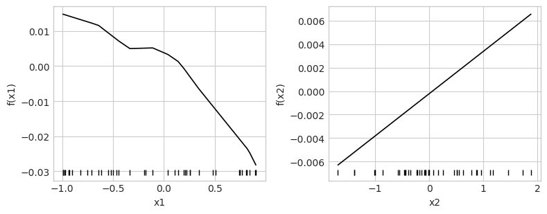
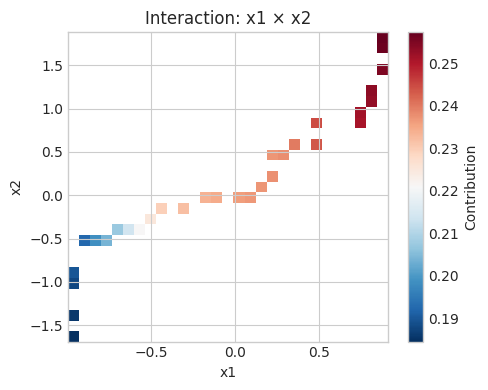
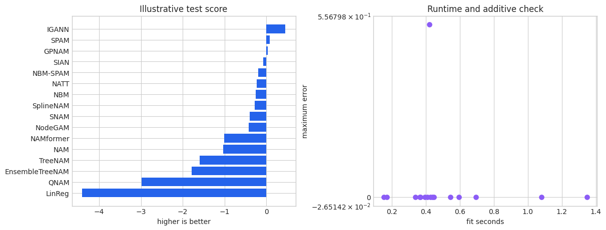

Neural additive model zoo
NAMpy separates architecture from task. An architecture determines how feature and interaction functions are represented; regressor, classifier, and LSS wrappers determine targets, losses, metrics, and output transforms. This notebook explains every registered architecture and uses a common small regression problem to make their inductive biases comparable. The next notebook systematically executes all task variants.
1. Common neural additive workflow
Neural additive models learn \(\eta=\beta_0+\sum_t f_t(x_t)\) by gradient optimization or an architecture-specific solver. PreTab transforms numerical and categorical inputs while retaining source-feature groups. Early stopping monitors validation loss; learning-rate schedules change the optimization trajectory; checkpoint averaging averages recent model states. Sample weights alter the empirical loss.
Centered components shift each term to have zero reference mean and move that shift into the intercept. Predictions remain unchanged. Explicit interactions should be chosen from domain knowledge or a discovery procedure evaluated separately from final fitting.
[1]:
from pathlib import Path
import tempfile
import time
import warnings
import matplotlib.pyplot as plt
import numpy as np
import pandas as pd
warnings.filterwarnings("ignore", category=FutureWarning)
plt.style.use("seaborn-v0_8-whitegrid")
COLORS = ["#2563EB", "#F97316", "#10B981", "#8B5CF6", "#EF4444"]
FAST_MODE = True
N_SAMPLES = 160 if FAST_MODE else 5000
MAX_EPOCHS = 2 if FAST_MODE else 150
MAX_STEPS = 2 if FAST_MODE else -1
RANDOM_STATE = 7
CHECKPOINT_ROOT = Path(tempfile.mkdtemp(prefix="nampy-notebook-"))
NEURAL_FIT_KWARGS = {
"max_epochs": MAX_EPOCHS,
"max_steps": MAX_STEPS,
"batch_size": 64 if FAST_MODE else 256,
"random_state": RANDOM_STATE,
"checkpoint_path": CHECKPOINT_ROOT,
"logger": False,
"enable_progress_bar": False,
"enable_model_summary": False,
"num_sanity_val_steps": 0,
}
rng = np.random.default_rng(RANDOM_STATE)
n = N_SAMPLES
x1 = rng.uniform(-1.0, 1.0, n)
x2 = rng.normal(size=n)
group = pd.Categorical(rng.choice(["a", "b", "c"], size=n))
X = pd.DataFrame({"x1": x1, "x2": x2, "group": group})
y = np.sin(np.pi * x1) + 0.35 * x2**2 + 0.45 * x1 * x2 + 0.25 * (group == "b") + rng.normal(0, 0.15, n)
from sklearn.model_selection import train_test_split
X_train, X_test, y_train, y_test = train_test_split(
X, y, test_size=0.25, random_state=RANDOM_STATE
)
from nampy import models
NEURAL_FIT_KWARGS["fast_dev_run"] = FAST_MODE
ARCH_KWARGS = {
"linreg": {},
"nam": {"layer_sizes": [12], "dropout": 0.0, "interactions": [("x1", "x2")]},
"sian": {"layer_sizes": [12], "interactions": [("x1", "x2")]},
"snam": {"layer_sizes": [12], "dropout": 0.0, "group_lasso_lambda": 0.01},
"gpnam": {"rff_num_feat": 12, "interactions": [("x1", "x2")]},
"igann": {"n_hid": 6, "n_estimators": 4, "early_stopping": 2},
"nbm": {"layer_sizes": [12], "num_bases": 6, "nary": [1, 2], "dropout": 0.0, "bases_dropout": 0.0},
"nbm_spam": {"layer_sizes": [12], "num_bases": 6, "ranks": [6], "batch_norm": False},
"spam": {"ranks": [6], "dropout": 0.0},
"natt": {"d_model": 8, "n_layers": 1, "n_heads": 2, "transformer_dim_feedforward": 16, "head_layer_sizes": (), "attn_dropout": 0.0},
"namformer": {"d_model": 8, "n_layers": 1, "n_heads": 2, "transformer_dim_feedforward": 16, "head_layer_sizes": (), "attn_dropout": 0.0},
"treenam": {"tree_depth": 2, "tree_lamda": 0.01},
"ensemble_treenam": {"tree_depth": 2, "tree_lamda": 0.01, "num_estimators": 2},
"nodegam": {"num_trees": 4, "num_layers": 1, "depth": 2, "anneal_steps": 10, "interaction_degree": 1},
"qnam": {"layer_sizes": [12], "dropout": 0.0, "distributional_kwargs": {"quantiles": [0.1, 0.5, 0.9]}},
"spline_nam": {"n_knots": 6, "smoothing": 0.01, "interactions": [("x1", "x2")]},
}
fitted_gallery = {}
comparison_rows = []
def parameter_count(estimator):
module = getattr(getattr(estimator, "model", None), "model", None)
return None if module is None else sum(p.numel() for p in module.parameters())
def reconstruct_components(components):
link = np.asarray(components.link)
def aligned(value):
array = np.asarray(value, dtype=float)
if link.ndim == 1 and array.shape == (link.shape[0], 1):
return array[:, 0]
if link.ndim == 2 and array.shape == (link.shape[0],):
return array[:, None]
return array
reconstruction = aligned(components.intercept)
for contribution in components.terms.values():
reconstruction = reconstruction + aligned(contribution)
if components.offset is not None:
reconstruction = reconstruction + aligned(components.offset)
return reconstruction
def fit_and_evaluate(name, estimator, target=y_train):
started = time.perf_counter()
estimator.fit(X_train, target, **NEURAL_FIT_KWARGS)
elapsed = time.perf_counter() - started
components = estimator.predict_components(X_test, center=True)
reconstruction = reconstruct_components(components)
error = float(np.max(np.abs(reconstruction - components.link)))
try:
components.validate_additive_reconstruction(rtol=1e-5, atol=1e-5)
reconstruction_valid = True
except ValueError:
reconstruction_valid = False
row = {
"model": name,
"test score": estimator.score(X_test, y_test) if "QNAM" not in name else estimator.score(X_test, y_test),
"fit seconds": elapsed,
"terms": len(components.terms),
"interactions": len(estimator.interaction_importance(X_test, center=True)),
"parameters": parameter_count(estimator),
"reconstruction error": error,
"reconstruction valid": reconstruction_valid,
}
fitted_gallery[name] = estimator
comparison_rows.append(row)
return row
def architecture_summary(estimator):
return {
"class": type(estimator).__name__,
"architecture": estimator.architecture_name,
"parameters": parameter_count(estimator),
"features": estimator.feature_names_in_.tolist(),
}
1.1 Preprocessing, training, and explanation with NAM
Min-max scaling maps numerical columns to a bounded range. PLE creates piecewise-linear encodings with several transformed columns per source feature. One-hot encoding keeps a categorical source feature grouped even though it expands into multiple columns. Scaling and encoding are fitted on training data only.
[2]:
from nampy.models import NAMRegressor
nam = NAMRegressor(
layer_sizes=[24, 12], dropout=0.0,
numerical_preprocessing="minmax",
categorical_preprocessing="one-hot",
interactions=[("x1", "x2")],
)
fit_and_evaluate("NAM", nam)
components = nam.predict_components(X_test, center=True)
display(architecture_summary(nam))
display(nam.term_importance(X_test, center=True))
display(nam.explain_terms(X_test, max_bins=18, center=True).head(12))
nam.plot_terms(X_test, center=True, rug=True, pages=1)
nam.plot_interactions(X_test)
/usr/local/lib/python3.10/dist-packages/tqdm/auto.py:21: TqdmWarning: IProgress not found. Please update jupyter and ipywidgets. See https://ipywidgets.readthedocs.io/en/stable/user_install.html
from .autonotebook import tqdm as notebook_tqdm
GPU available: False, used: False
TPU available: False, using: 0 TPU cores
Running in `fast_dev_run` mode: will run the requested loop using 1 batch(es). Logging and checkpointing is suppressed.
/home/ad32/.local/lib/python3.10/site-packages/lightning/pytorch/trainer/connectors/data_connector.py:434: The 'train_dataloader' does not have many workers which may be a bottleneck. Consider increasing the value of the `num_workers` argument` to `num_workers=11` in the `DataLoader` to improve performance.
/home/ad32/.local/lib/python3.10/site-packages/lightning/pytorch/trainer/connectors/data_connector.py:434: The 'val_dataloader' does not have many workers which may be a bottleneck. Consider increasing the value of the `num_workers` argument` to `num_workers=11` in the `DataLoader` to improve performance.
/home/ad32/.local/lib/python3.10/site-packages/lightning/pytorch/core/module.py:522: You called `self.log('train_loss', ..., logger=True)` but have no logger configured. You can enable one by doing `Trainer(logger=ALogger(...))`
/home/ad32/.local/lib/python3.10/site-packages/lightning/pytorch/core/module.py:522: You called `self.log('val_loss', ..., logger=True)` but have no logger configured. You can enable one by doing `Trainer(logger=ALogger(...))`
`Trainer.fit` stopped: `max_steps=1` reached.
{'class': 'NAMRegressor',
'architecture': 'nam',
'parameters': 1517,
'features': ['x1', 'x2', 'group']}
| term | term_type | output | importance | |
|---|---|---|---|---|
| 0 | group | main | 0 | 0.030250 |
| 1 | x1:x2 | interaction | 0 | 0.016165 |
| 2 | x1 | main | 0 | 0.011576 |
| 3 | x2 | main | 0 | 0.002335 |
| term | term_type | output | value | value_2 | contribution | count | importance | |
|---|---|---|---|---|---|---|---|---|
| 0 | x1 | main | 0 | -0.985 | NaN | 0.014795 | 3 | 0.011576 |
| 1 | x1 | main | 0 | -0.956 | NaN | 0.014517 | 2 | 0.011576 |
| 2 | x1 | main | 0 | -0.897 | NaN | 0.014140 | 2 | 0.011576 |
| 3 | x1 | main | 0 | -0.791 | NaN | 0.012984 | 2 | 0.011576 |
| 4 | x1 | main | 0 | -0.6715 | NaN | 0.011957 | 2 | 0.011576 |
| 5 | x1 | main | 0 | -0.57 | NaN | 0.010272 | 2 | 0.011576 |
| 6 | x1 | main | 0 | -0.491 | NaN | 0.008328 | 3 | 0.011576 |
| 7 | x1 | main | 0 | -0.3745 | NaN | 0.006099 | 2 | 0.011576 |
| 8 | x1 | main | 0 | -0.216 | NaN | 0.005141 | 2 | 0.011576 |
| 9 | x1 | main | 0 | -0.0306 | NaN | 0.004272 | 2 | 0.011576 |
| 10 | x1 | main | 0 | 0.1349 | NaN | 0.001691 | 2 | 0.011576 |
| 11 | x1 | main | 0 | 0.206 | NaN | -0.000936 | 2 | 0.011576 |


2. Runtime capability discovery
The installed registry is the source of truth. It records task support and architectural contracts without claiming that every combination is equally useful. In particular, QNAM is distributional-only and SplineNAM is regression-only; IGANN does not advertise interactions.
[3]:
from nampy.neural.registry import architectures
capability_rows = []
for name, spec in architectures().items():
capability_rows.append({
"architecture": name,
"Regressor": spec.supports("regression"),
"Classifier": spec.supports("classification"),
"LSS": spec.supports("distributional"),
"interactions": spec.supports("interactions"),
"interaction discovery": spec.supports("interaction_selection"),
"local importance": spec.supports("local_term_importance"),
"native solver": spec.supports("native_training"),
})
capability_table = pd.DataFrame(capability_rows)
capability_table
[3]:
| architecture | Regressor | Classifier | LSS | interactions | interaction discovery | local importance | native solver | |
|---|---|---|---|---|---|---|---|---|
| 0 | linreg | True | True | True | False | False | False | False |
| 1 | nam | True | True | True | True | False | False | False |
| 2 | sian | True | True | True | True | True | False | False |
| 3 | snam | True | True | True | True | False | False | False |
| 4 | gpnam | True | True | True | True | False | False | False |
| 5 | igann | True | True | True | False | False | False | True |
| 6 | nbm | True | True | True | True | False | False | False |
| 7 | nbm_spam | True | True | True | True | False | False | False |
| 8 | spam | True | True | True | True | False | True | False |
| 9 | natt | True | True | True | True | False | False | False |
| 10 | namformer | True | True | True | True | False | False | False |
| 11 | treenam | True | True | True | True | False | False | False |
| 12 | ensemble_treenam | True | True | True | True | False | False | False |
| 13 | nodegam | True | True | True | True | False | False | False |
| 14 | qnam | False | False | True | True | False | False | False |
| 15 | spline_nam | True | False | False | True | False | False | False |
3. Linear baseline: LinReg
LinReg preserves the additive contract while restricting every numerical effect to a line and categorical effects to learned level shifts. It is a useful sanity check: nonlinear models should justify their added flexibility against this baseline.
[4]:
from nampy.models import LinRegRegressor
linreg = LinRegRegressor(numerical_preprocessing="standardization")
display(fit_and_evaluate("LinReg", linreg))
GPU available: False, used: False
TPU available: False, using: 0 TPU cores
Running in `fast_dev_run` mode: will run the requested loop using 1 batch(es). Logging and checkpointing is suppressed.
/home/ad32/.local/lib/python3.10/site-packages/lightning/pytorch/trainer/connectors/data_connector.py:434: The 'train_dataloader' does not have many workers which may be a bottleneck. Consider increasing the value of the `num_workers` argument` to `num_workers=11` in the `DataLoader` to improve performance.
/home/ad32/.local/lib/python3.10/site-packages/lightning/pytorch/trainer/connectors/data_connector.py:434: The 'val_dataloader' does not have many workers which may be a bottleneck. Consider increasing the value of the `num_workers` argument` to `num_workers=11` in the `DataLoader` to improve performance.
/home/ad32/.local/lib/python3.10/site-packages/lightning/pytorch/core/module.py:522: You called `self.log('train_loss', ..., logger=True)` but have no logger configured. You can enable one by doing `Trainer(logger=ALogger(...))`
/home/ad32/.local/lib/python3.10/site-packages/lightning/pytorch/core/module.py:522: You called `self.log('val_loss', ..., logger=True)` but have no logger configured. You can enable one by doing `Trainer(logger=ALogger(...))`
`Trainer.fit` stopped: `max_steps=1` reached.
{'model': 'LinReg',
'test score': -4.410392914065258,
'fit seconds': 0.6936383840511553,
'terms': 3,
'interactions': 0,
'parameters': 7,
'reconstruction error': 2.218221197836101e-07,
'reconstruction valid': True}
4. Feature networks: NAM
NAM assigns one multilayer perceptron to each source feature and optional networks to explicit interactions. Width, feature-layer type, dropout, normalization, and regularization control complexity. Centering produces stable shape functions but does not make observational effects causal.
[5]:
display({key: nam.get_params(deep=False)[key] for key in ("layer_sizes", "dropout", "interactions")})
{'layer_sizes': [24, 12], 'dropout': 0.0, 'interactions': [('x1', 'x2')]}
5. Interaction discovery: SIAN
SIAN can fit a reference network, score candidate interactions with an Archipelago-style detector, enforce hierarchy, and then fit selected higher-order terms. Explicit interactions bypass discovery. Compression changes execution layout after fitting while preserving predictions.
[6]:
from nampy.models import SIANRegressor
sian = SIANRegressor(layer_sizes=[12], interactions=[("x1", "x2")])
display(fit_and_evaluate("SIAN", sian))
before = sian.predict(X_test)
sian.compress_terms()
np.testing.assert_allclose(before, sian.predict(X_test), rtol=1e-5, atol=1e-5)
sian.block_mask_terms()
GPU available: False, used: False
TPU available: False, using: 0 TPU cores
Running in `fast_dev_run` mode: will run the requested loop using 1 batch(es). Logging and checkpointing is suppressed.
/home/ad32/.local/lib/python3.10/site-packages/lightning/pytorch/trainer/connectors/data_connector.py:434: The 'train_dataloader' does not have many workers which may be a bottleneck. Consider increasing the value of the `num_workers` argument` to `num_workers=11` in the `DataLoader` to improve performance.
/home/ad32/.local/lib/python3.10/site-packages/lightning/pytorch/trainer/connectors/data_connector.py:434: The 'val_dataloader' does not have many workers which may be a bottleneck. Consider increasing the value of the `num_workers` argument` to `num_workers=11` in the `DataLoader` to improve performance.
/home/ad32/.local/lib/python3.10/site-packages/lightning/pytorch/core/module.py:522: You called `self.log('train_loss', ..., logger=True)` but have no logger configured. You can enable one by doing `Trainer(logger=ALogger(...))`
/home/ad32/.local/lib/python3.10/site-packages/lightning/pytorch/core/module.py:522: You called `self.log('val_loss', ..., logger=True)` but have no logger configured. You can enable one by doing `Trainer(logger=ALogger(...))`
`Trainer.fit` stopped: `max_steps=1` reached.
{'model': 'SIAN',
'test score': -0.07040451312409512,
'fit seconds': 0.36580666701775044,
'terms': 4,
'interactions': 1,
'parameters': 485,
'reconstruction error': 4.936009645462036e-08,
'reconstruction valid': True}
[6]:
SIANRegressor(activation=<class 'torch.nn.modules.activation.ReLU'>,
archipelago_baseline='pairwise', binning_strategy='uniform',
cat_cutoff=0.03, categorical_preprocessing='one-hot', degree=3,
dropout=0.0, execution_mode='block_masked',
feature_output_bias=True, feature_preprocessing=None,
heredity_fraction=0.5, interaction_degree=None,
interaction_detector='a..., interaction_thresholds=0.1,
interactions=[('x1', 'x2')], intercept=True,
knots_strategy='uniform', l1_regularization=5e-05,
layer_sizes=[12], lr=0.005, lr_factor=0.1, lr_patience=10,
lr_schedule='plateau', max_candidates=1000,
max_interaction_order=3, max_terms_per_order=None,
min_unique_vals=5, n_bins=64, n_knots=64,
numerical_preprocessing='standardization', ...)In a Jupyter environment, please rerun this cell to show the HTML representation or trust the notebook. On GitHub, the HTML representation is unable to render, please try loading this page with nbviewer.org.
SIANRegressor(activation=<class 'torch.nn.modules.activation.ReLU'>,
archipelago_baseline='pairwise', binning_strategy='uniform',
cat_cutoff=0.03, categorical_preprocessing='one-hot', degree=3,
dropout=0.0, execution_mode='block_masked',
feature_output_bias=True, feature_preprocessing=None,
heredity_fraction=0.5, interaction_degree=None,
interaction_detector='a..., interaction_thresholds=0.1,
interactions=[('x1', 'x2')], intercept=True,
knots_strategy='uniform', l1_regularization=5e-05,
layer_sizes=[12], lr=0.005, lr_factor=0.1, lr_patience=10,
lr_schedule='plateau', max_candidates=1000,
max_interaction_order=3, max_terms_per_order=None,
min_unique_vals=5, n_bins=64, n_knots=64,
numerical_preprocessing='standardization', ...)6. Group sparsity: SNAM
SNAM adds a group-lasso penalty over feature and optionally interaction subnetworks. Whole terms can be driven toward zero. Inspect group norms across a regularization path; a larger penalty favors a smaller model but can underfit weak real effects.
[7]:
from nampy.models import SNAMRegressor
snam = SNAMRegressor(layer_sizes=[12], dropout=0.0, group_lasso_lambda=0.02)
display(fit_and_evaluate("SNAM", snam))
display(snam.model.model.get_group_norms())
display(snam.model.model.selected_groups(threshold=1e-6))
GPU available: False, used: False
TPU available: False, using: 0 TPU cores
Running in `fast_dev_run` mode: will run the requested loop using 1 batch(es). Logging and checkpointing is suppressed.
/home/ad32/.local/lib/python3.10/site-packages/lightning/pytorch/trainer/connectors/data_connector.py:434: The 'train_dataloader' does not have many workers which may be a bottleneck. Consider increasing the value of the `num_workers` argument` to `num_workers=11` in the `DataLoader` to improve performance.
/home/ad32/.local/lib/python3.10/site-packages/lightning/pytorch/trainer/connectors/data_connector.py:434: The 'val_dataloader' does not have many workers which may be a bottleneck. Consider increasing the value of the `num_workers` argument` to `num_workers=11` in the `DataLoader` to improve performance.
/home/ad32/.local/lib/python3.10/site-packages/lightning/pytorch/core/module.py:522: You called `self.log('train_loss', ..., logger=True)` but have no logger configured. You can enable one by doing `Trainer(logger=ALogger(...))`
/home/ad32/.local/lib/python3.10/site-packages/lightning/pytorch/core/module.py:522: You called `self.log('val_loss', ..., logger=True)` but have no logger configured. You can enable one by doing `Trainer(logger=ALogger(...))`
`Trainer.fit` stopped: `max_steps=1` reached.
{'model': 'SNAM',
'test score': -0.39594107005660995,
'fit seconds': 0.40716076898388565,
'terms': 3,
'interactions': 0,
'parameters': 568,
'reconstruction error': 3.149762051180005e-08,
'reconstruction valid': True}
{'x1': 2.0534441471099854,
'x2': 2.1946675777435303,
'group': 3.0043396949768066}
['x1', 'x2', 'group']
7. Random Fourier features: GPNAM
GPNAM approximates stationary Gaussian-process kernels with random Fourier features, then solves a regularized linear problem. Kernel widths govern smoothness; the feature count governs approximation fidelity. Pairwise RFF blocks provide GP-NA2M-style interactions.
[8]:
from nampy.models import GPNAMRegressor
gpnam = GPNAMRegressor(rff_num_feat=12, interactions=[("x1", "x2")])
display(fit_and_evaluate("GPNAM", gpnam))
display(gpnam.model.model.basis_metadata())
{'model': 'GPNAM',
'test score': 0.033474218477728024,
'fit seconds': 0.1688058989821002,
'terms': 6,
'interactions': 1,
'parameters': 73,
'reconstruction error': 1.2293457962719856e-07,
'reconstruction valid': True}
{'feature_names': ('x1', 'x2', 'group[0]', 'group[1]', 'group[2]'),
'interaction_names': ('x1:x2',),
'kernel_widths': array([0.02286518, 0.04142721, 0.01972421, 0.01811785, 0.02062807],
dtype=float32),
'frequencies': array([-1.4260769 , -1.0200763 , -0.73631597, -0.5024022 , -0.2933812 ,
-0.09655861, 0.09655868, 0.29338127, 0.50240225, 0.73631597,
1.0200763 , 1.4260769 ], dtype=float32),
'phases': array([[1.5707964, 2.0943952, 0. , 2.617994 , 3.6651917, 4.712389 ,
5.759587 , 3.1415927, 4.1887903, 0.5235988, 5.235988 , 1.0471976],
[3.6651917, 3.1415927, 4.712389 , 2.617994 , 0.5235988, 1.5707964,
5.235988 , 2.0943952, 0. , 1.0471976, 4.1887903, 5.759587 ],
[5.759587 , 4.1887903, 5.235988 , 2.617994 , 3.6651917, 0.5235988,
3.1415927, 1.0471976, 0. , 2.0943952, 4.712389 , 1.5707964],
[3.6651917, 0. , 4.1887903, 1.5707964, 5.759587 , 2.0943952,
1.0471976, 2.617994 , 4.712389 , 3.1415927, 5.235988 , 0.5235988],
[4.1887903, 0. , 3.1415927, 2.617994 , 0.5235988, 5.235988 ,
4.712389 , 5.759587 , 3.6651917, 1.0471976, 1.5707964, 2.0943952]],
dtype=float32),
'interaction_frequencies': array([[[-0.5024022 , 0.29338127],
[ 0.73631597, -0.2933812 ],
[ 0.29338127, -1.0200763 ],
[-0.2933812 , 0.50240225],
[-1.4260769 , -1.4260769 ],
[ 1.4260769 , -0.73631597],
[-1.0200763 , 1.4260769 ],
[ 1.0200763 , -0.09655861],
[ 0.50240225, 0.09655868],
[-0.09655861, 1.0200763 ],
[-0.73631597, -0.5024022 ],
[ 0.09655868, 0.73631597]]], dtype=float32),
'interaction_phases': array([[4.1887903, 0. , 5.235988 , 3.6651917, 2.617994 , 3.1415927,
5.759587 , 0.5235988, 4.712389 , 2.0943952, 1.5707964, 1.0471976]],
dtype=float32)}
8. ELM boosting: IGANN
IGANN begins with a linear fit and sequentially adds feature-wise extreme learning machine stages with fixed random hidden weights. Regression and binary classification use its native boosting solver. Interactions are not advertised by the registry.
[9]:
from nampy.models import IGANNRegressor
igann = IGANNRegressor(n_hid=6, n_estimators=4, early_stopping=2)
display(fit_and_evaluate("IGANN", igann))
display(igann.training_history_)
{'model': 'IGANN',
'test score': 0.45830343304163224,
'fit seconds': 0.150605823029764,
'terms': 3,
'interactions': 0,
'parameters': 61,
'reconstruction error': 7.450580596923828e-08,
'reconstruction valid': True}
{'train_loss': (0.46375539898872375,
0.37621429562568665,
0.35618042945861816,
0.35118207335472107),
'val_loss': (0.5215343832969666,
0.4187146723270416,
0.3900158703327179,
0.387448787689209)}
10. Polynomial structure and local importance: SPAM
SPAM represents low-rank polynomial interactions. reg_order controls the maximum degree and ranks control factorization width. Because polynomial terms can be evaluated row by row, SPAM exposes local term importance in addition to global mean-absolute contribution.
[11]:
from nampy.models import SPAMRegressor
spam = SPAMRegressor(ranks=[6], reg_order=2, regularization_scale=1e-5)
display(fit_and_evaluate("SPAM", spam))
display(spam.local_term_importance(X_test.iloc[:3], top_k=4))
GPU available: False, used: False
TPU available: False, using: 0 TPU cores
Running in `fast_dev_run` mode: will run the requested loop using 1 batch(es). Logging and checkpointing is suppressed.
/home/ad32/.local/lib/python3.10/site-packages/lightning/pytorch/trainer/connectors/data_connector.py:434: The 'train_dataloader' does not have many workers which may be a bottleneck. Consider increasing the value of the `num_workers` argument` to `num_workers=11` in the `DataLoader` to improve performance.
/home/ad32/.local/lib/python3.10/site-packages/lightning/pytorch/trainer/connectors/data_connector.py:434: The 'val_dataloader' does not have many workers which may be a bottleneck. Consider increasing the value of the `num_workers` argument` to `num_workers=11` in the `DataLoader` to improve performance.
/home/ad32/.local/lib/python3.10/site-packages/lightning/pytorch/core/module.py:522: You called `self.log('train_loss', ..., logger=True)` but have no logger configured. You can enable one by doing `Trainer(logger=ALogger(...))`
/home/ad32/.local/lib/python3.10/site-packages/lightning/pytorch/core/module.py:522: You called `self.log('val_loss', ..., logger=True)` but have no logger configured. You can enable one by doing `Trainer(logger=ALogger(...))`
`Trainer.fit` stopped: `max_steps=1` reached.
{'model': 'SPAM',
'test score': 0.08254108543158245,
'fit seconds': 0.4461368920165114,
'terms': 6,
'interactions': 0,
'parameters': 42,
'reconstruction error': 3.725290298461914e-08,
'reconstruction valid': True}
[[{'term': ('x1',), 'order': 1, 'contribution': 0.13255981542170048},
{'term': ('x2',), 'order': 1, 'contribution': 0.05799068138003349},
{'term': ('group[0]',), 'order': 1, 'contribution': 0.057658784091472626},
{'term': ('x2', 'group[0]'),
'order': 2,
'contribution': 0.004713478963822126}],
[{'term': ('group[2]',), 'order': 1, 'contribution': 0.16544777899980545},
{'term': ('x1',), 'order': 1, 'contribution': -0.05200693476945162},
{'term': ('x2',), 'order': 1, 'contribution': 0.029433769639581442},
{'term': ('x2', 'group[2]'),
'order': 2,
'contribution': 0.005653253756463528}],
[{'term': ('x1',), 'order': 1, 'contribution': -0.12701707147061825},
{'term': ('group[1]',), 'order': 1, 'contribution': 0.025468412786722183},
{'term': ('x2',), 'order': 1, 'contribution': 0.007836241624318063},
{'term': ('x1', 'group[1]'),
'order': 2,
'contribution': -0.007441476918756962}]]
12. Additive attention: NATT
NATT uses attention inside additive feature representations and extracts named term effects from the model output. Attention weights describe an internal routing mechanism; they are not causal effects and should not be substituted for component reconstruction or perturbation analysis.
[13]:
from nampy.models import NATTRegressor
natt = NATTRegressor(d_model=8, n_layers=1, n_heads=2, transformer_dim_feedforward=16, head_layer_sizes=(), attn_dropout=0.0)
display(fit_and_evaluate("NATT", natt))
/home/ad32/.local/lib/python3.10/site-packages/torch/nn/modules/transformer.py:392: UserWarning: enable_nested_tensor is True, but self.use_nested_tensor is False because encoder_layer.norm_first was True
warnings.warn(
GPU available: False, used: False
TPU available: False, using: 0 TPU cores
Running in `fast_dev_run` mode: will run the requested loop using 1 batch(es). Logging and checkpointing is suppressed.
/home/ad32/.local/lib/python3.10/site-packages/lightning/pytorch/trainer/connectors/data_connector.py:434: The 'train_dataloader' does not have many workers which may be a bottleneck. Consider increasing the value of the `num_workers` argument` to `num_workers=11` in the `DataLoader` to improve performance.
/home/ad32/.local/lib/python3.10/site-packages/lightning/pytorch/trainer/connectors/data_connector.py:434: The 'val_dataloader' does not have many workers which may be a bottleneck. Consider increasing the value of the `num_workers` argument` to `num_workers=11` in the `DataLoader` to improve performance.
/home/ad32/.local/lib/python3.10/site-packages/lightning/pytorch/core/module.py:522: You called `self.log('train_loss', ..., logger=True)` but have no logger configured. You can enable one by doing `Trainer(logger=ALogger(...))`
/home/ad32/.local/lib/python3.10/site-packages/lightning/pytorch/core/module.py:522: You called `self.log('val_loss', ..., logger=True)` but have no logger configured. You can enable one by doing `Trainer(logger=ALogger(...))`
`Trainer.fit` stopped: `max_steps=1` reached.
{'model': 'NATT',
'test score': -0.22870855978607563,
'fit seconds': 0.5450929860235192,
'terms': 3,
'interactions': 0,
'parameters': 48220,
'reconstruction error': 4.6391505748033524e-08,
'reconstruction valid': True}
13. Identifiable transformer effects: NAMformer
NAMformer uses a transformer backbone while retaining explicit marginal outputs. The additive reconstruction is the operational identifiability check. Effect stability should also be assessed across seeds and data splits because a valid decomposition need not be statistically stable.
[14]:
from nampy.models import NAMformerRegressor
namformer = NAMformerRegressor(d_model=8, n_layers=1, n_heads=2, transformer_dim_feedforward=16, head_layer_sizes=(), attn_dropout=0.0)
display(fit_and_evaluate("NAMformer", namformer))
/home/ad32/.local/lib/python3.10/site-packages/torch/nn/modules/transformer.py:392: UserWarning: enable_nested_tensor is True, but self.use_nested_tensor is False because encoder_layer.norm_first was True
warnings.warn(
GPU available: False, used: False
TPU available: False, using: 0 TPU cores
Running in `fast_dev_run` mode: will run the requested loop using 1 batch(es). Logging and checkpointing is suppressed.
/home/ad32/.local/lib/python3.10/site-packages/lightning/pytorch/trainer/connectors/data_connector.py:434: The 'train_dataloader' does not have many workers which may be a bottleneck. Consider increasing the value of the `num_workers` argument` to `num_workers=11` in the `DataLoader` to improve performance.
/home/ad32/.local/lib/python3.10/site-packages/lightning/pytorch/trainer/connectors/data_connector.py:434: The 'val_dataloader' does not have many workers which may be a bottleneck. Consider increasing the value of the `num_workers` argument` to `num_workers=11` in the `DataLoader` to improve performance.
/home/ad32/.local/lib/python3.10/site-packages/lightning/pytorch/core/module.py:522: You called `self.log('train_loss', ..., logger=True)` but have no logger configured. You can enable one by doing `Trainer(logger=ALogger(...))`
/home/ad32/.local/lib/python3.10/site-packages/lightning/pytorch/core/module.py:522: You called `self.log('val_loss', ..., logger=True)` but have no logger configured. You can enable one by doing `Trainer(logger=ALogger(...))`
`Trainer.fit` stopped: `max_steps=1` reached.
{'model': 'NAMformer',
'test score': -1.0020515494294067,
'fit seconds': 0.4193209200166166,
'terms': 3,
'interactions': 0,
'parameters': 1013,
'reconstruction error': 0.5302834568428807,
'reconstruction valid': False}
14. One differentiable tree per term: TreeNAM
TreeNAM uses soft decision trees for main and interaction terms. Its shapes are piecewise rather than globally smooth. Depth increases the number of regions and therefore the risk of fitting small-sample noise.
[15]:
from nampy.models import TreeNAMRegressor
treenam = TreeNAMRegressor(tree_depth=2, tree_lamda=0.01)
display(fit_and_evaluate("TreeNAM", treenam))
GPU available: False, used: False
TPU available: False, using: 0 TPU cores
Running in `fast_dev_run` mode: will run the requested loop using 1 batch(es). Logging and checkpointing is suppressed.
/home/ad32/.local/lib/python3.10/site-packages/lightning/pytorch/trainer/connectors/data_connector.py:434: The 'train_dataloader' does not have many workers which may be a bottleneck. Consider increasing the value of the `num_workers` argument` to `num_workers=11` in the `DataLoader` to improve performance.
/home/ad32/.local/lib/python3.10/site-packages/lightning/pytorch/trainer/connectors/data_connector.py:434: The 'val_dataloader' does not have many workers which may be a bottleneck. Consider increasing the value of the `num_workers` argument` to `num_workers=11` in the `DataLoader` to improve performance.
/home/ad32/.local/lib/python3.10/site-packages/lightning/pytorch/core/module.py:522: You called `self.log('train_loss', ..., logger=True)` but have no logger configured. You can enable one by doing `Trainer(logger=ALogger(...))`
/home/ad32/.local/lib/python3.10/site-packages/lightning/pytorch/core/module.py:522: You called `self.log('val_loss', ..., logger=True)` but have no logger configured. You can enable one by doing `Trainer(logger=ALogger(...))`
`Trainer.fit` stopped: `max_steps=1` reached.
{'model': 'TreeNAM',
'test score': -1.593446941921293,
'fit seconds': 0.3647016590111889,
'terms': 3,
'interactions': 0,
'parameters': 145,
'reconstruction error': 5.7392753660678864e-08,
'reconstruction valid': True}
15. Joint tree ensembles: EnsembleTreeNAM
EnsembleTreeNAM is an architecture that trains several TreeNAM members jointly and averages their term outputs. It differs from NeuralEnsemble, which clones and independently fits any supported base regressor or classifier.
[16]:
from nampy.models import EnsembleTreeNAMRegressor
ensemble_treenam = EnsembleTreeNAMRegressor(tree_depth=2, tree_lamda=0.01, num_estimators=2)
display(fit_and_evaluate("EnsembleTreeNAM", ensemble_treenam))
GPU available: False, used: False
TPU available: False, using: 0 TPU cores
Running in `fast_dev_run` mode: will run the requested loop using 1 batch(es). Logging and checkpointing is suppressed.
/home/ad32/.local/lib/python3.10/site-packages/lightning/pytorch/trainer/connectors/data_connector.py:434: The 'train_dataloader' does not have many workers which may be a bottleneck. Consider increasing the value of the `num_workers` argument` to `num_workers=11` in the `DataLoader` to improve performance.
/home/ad32/.local/lib/python3.10/site-packages/lightning/pytorch/trainer/connectors/data_connector.py:434: The 'val_dataloader' does not have many workers which may be a bottleneck. Consider increasing the value of the `num_workers` argument` to `num_workers=11` in the `DataLoader` to improve performance.
/home/ad32/.local/lib/python3.10/site-packages/lightning/pytorch/core/module.py:522: You called `self.log('train_loss', ..., logger=True)` but have no logger configured. You can enable one by doing `Trainer(logger=ALogger(...))`
/home/ad32/.local/lib/python3.10/site-packages/lightning/pytorch/core/module.py:522: You called `self.log('val_loss', ..., logger=True)` but have no logger configured. You can enable one by doing `Trainer(logger=ALogger(...))`
`Trainer.fit` stopped: `max_steps=1` reached.
{'model': 'EnsembleTreeNAM',
'test score': -1.7877040210134405,
'fit seconds': 0.33791967399884015,
'terms': 3,
'interactions': 0,
'parameters': 290,
'reconstruction error': 8.731149137020111e-08,
'reconstruction valid': True}
16. Oblivious additive trees: NodeGAM
NodeGAM stacks differentiable oblivious trees: all nodes at a depth share a split choice. Feature selection temperature is annealed during training. Masked pretraining is available for larger runs; extracted additive terms remain the explanation interface.
[17]:
from nampy.models import NodeGAMRegressor
nodegam = NodeGAMRegressor(num_trees=4, num_layers=1, depth=2, anneal_steps=10, interaction_degree=1)
display(fit_and_evaluate("NodeGAM", nodegam))
GPU available: False, used: False
TPU available: False, using: 0 TPU cores
Running in `fast_dev_run` mode: will run the requested loop using 1 batch(es). Logging and checkpointing is suppressed.
/home/ad32/.local/lib/python3.10/site-packages/lightning/pytorch/trainer/connectors/data_connector.py:434: The 'train_dataloader' does not have many workers which may be a bottleneck. Consider increasing the value of the `num_workers` argument` to `num_workers=11` in the `DataLoader` to improve performance.
/home/ad32/.local/lib/python3.10/site-packages/lightning/pytorch/trainer/connectors/data_connector.py:434: The 'val_dataloader' does not have many workers which may be a bottleneck. Consider increasing the value of the `num_workers` argument` to `num_workers=11` in the `DataLoader` to improve performance.
/home/ad32/projects/package/NAMpy/nampy/neural/architectures/components/additive_trees.py:133: UserWarning: Data-aware initialization is performed on less than 1000 data points. This may cause instability. To avoid potential problems, run this model on a data batch with at least 1000 data samples. You can do so manually before training. Use with torch.no_grad() for memory efficiency.
super().initialize(input, eps=eps)
/home/ad32/.local/lib/python3.10/site-packages/lightning/pytorch/core/module.py:522: You called `self.log('train_loss', ..., logger=True)` but have no logger configured. You can enable one by doing `Trainer(logger=ALogger(...))`
/home/ad32/.local/lib/python3.10/site-packages/lightning/pytorch/core/module.py:522: You called `self.log('val_loss', ..., logger=True)` but have no logger configured. You can enable one by doing `Trainer(logger=ALogger(...))`
`Trainer.fit` stopped: `max_steps=1` reached.
{'model': 'NodeGAM',
'test score': -0.4191941486472064,
'fit seconds': 1.3479230319499038,
'terms': 3,
'interactions': 0,
'parameters': 383,
'reconstruction error': 1.1717202141880989e-07,
'reconstruction valid': True}
17. Non-crossing conditional quantiles: QNAM
QNAM predicts several conditional quantiles under pinball loss. A monotone transform parameterizes successive quantile increments, making non-crossing structural rather than a post-hoc sort. The gap between two quantiles forms a conditional prediction interval.
[18]:
from nampy.models import QNAMLSS
qnam = QNAMLSS(layer_sizes=[12], dropout=0.0, distributional_kwargs={"quantiles": [0.1, 0.5, 0.9]})
display(fit_and_evaluate("QNAM", qnam))
predicted_quantiles = qnam.predict(X_test)
assert np.all(np.diff(predicted_quantiles, axis=1) >= -1e-7)
display({"minimum adjacent quantile gap": float(np.diff(predicted_quantiles, axis=1).min())})
GPU available: False, used: False
TPU available: False, using: 0 TPU cores
Running in `fast_dev_run` mode: will run the requested loop using 1 batch(es). Logging and checkpointing is suppressed.
/home/ad32/.local/lib/python3.10/site-packages/lightning/pytorch/trainer/connectors/data_connector.py:434: The 'train_dataloader' does not have many workers which may be a bottleneck. Consider increasing the value of the `num_workers` argument` to `num_workers=11` in the `DataLoader` to improve performance.
/home/ad32/.local/lib/python3.10/site-packages/lightning/pytorch/trainer/connectors/data_connector.py:434: The 'val_dataloader' does not have many workers which may be a bottleneck. Consider increasing the value of the `num_workers` argument` to `num_workers=11` in the `DataLoader` to improve performance.
/home/ad32/.local/lib/python3.10/site-packages/lightning/pytorch/core/module.py:522: You called `self.log('train_loss', ..., logger=True)` but have no logger configured. You can enable one by doing `Trainer(logger=ALogger(...))`
/home/ad32/.local/lib/python3.10/site-packages/lightning/pytorch/core/module.py:522: You called `self.log('val_loss', ..., logger=True)` but have no logger configured. You can enable one by doing `Trainer(logger=ALogger(...))`
`Trainer.fit` stopped: `max_steps=1` reached.
{'model': 'QNAM',
'test score': -2.988131046295166,
'fit seconds': 0.4378536209696904,
'terms': 3,
'interactions': 0,
'parameters': 648,
'reconstruction error': 4.76837158203125e-07,
'reconstruction valid': True}
{'minimum adjacent quantile gap': 2.5079970359802246}
18. Cubic spline layers: SplineNAM
SplineNAM replaces generic feature networks with cubic spline layers. Knot count determines capacity; a smoothing penalty discourages rough coefficients. Interaction spline layers extend the same idea to named feature pairs. Derivative plots reveal how the penalty changes local slopes.
[19]:
from nampy.models import SplineNAMRegressor
spline_nam = SplineNAMRegressor(n_knots=6, smoothing=0.01, interactions=[("x1", "x2")])
display(fit_and_evaluate("SplineNAM", spline_nam))
GPU available: False, used: False
TPU available: False, using: 0 TPU cores
Running in `fast_dev_run` mode: will run the requested loop using 1 batch(es). Logging and checkpointing is suppressed.
/home/ad32/.local/lib/python3.10/site-packages/lightning/pytorch/trainer/connectors/data_connector.py:434: The 'train_dataloader' does not have many workers which may be a bottleneck. Consider increasing the value of the `num_workers` argument` to `num_workers=11` in the `DataLoader` to improve performance.
/home/ad32/.local/lib/python3.10/site-packages/lightning/pytorch/trainer/connectors/data_connector.py:434: The 'val_dataloader' does not have many workers which may be a bottleneck. Consider increasing the value of the `num_workers` argument` to `num_workers=11` in the `DataLoader` to improve performance.
/home/ad32/.local/lib/python3.10/site-packages/lightning/pytorch/core/module.py:522: You called `self.log('train_loss', ..., logger=True)` but have no logger configured. You can enable one by doing `Trainer(logger=ALogger(...))`
/home/ad32/.local/lib/python3.10/site-packages/lightning/pytorch/core/module.py:522: You called `self.log('val_loss', ..., logger=True)` but have no logger configured. You can enable one by doing `Trainer(logger=ALogger(...))`
`Trainer.fit` stopped: `max_steps=1` reached.
{'model': 'SplineNAM',
'test score': -0.2752696939011934,
'fit seconds': 0.5924958139657974,
'terms': 4,
'interactions': 1,
'parameters': 29,
'reconstruction error': 6.129266694188118e-08,
'reconstruction valid': True}
19. Standardized architecture comparison
The table uses one split, identical fast-mode budgets, and each architecture’s required preprocessing. It is an interface and scale check—not a competitive benchmark. Serious comparisons need tuned budgets, repeated splits, uncertainty, and task-appropriate metrics.
[20]:
comparison = pd.DataFrame(comparison_rows).sort_values("test score", ascending=False)
comparison
[20]:
| model | test score | fit seconds | terms | interactions | parameters | reconstruction error | reconstruction valid | |
|---|---|---|---|---|---|---|---|---|
| 5 | IGANN | 0.458303 | 0.150606 | 3 | 0 | 61 | 7.450581e-08 | True |
| 7 | SPAM | 0.082541 | 0.446137 | 6 | 0 | 42 | 3.725290e-08 | True |
| 4 | GPNAM | 0.033474 | 0.168806 | 6 | 1 | 73 | 1.229346e-07 | True |
| 2 | SIAN | -0.070405 | 0.365807 | 4 | 1 | 485 | 4.936010e-08 | True |
| 8 | NBM-SPAM | -0.198290 | 0.392529 | 6 | 0 | 317 | 1.117587e-08 | True |
| 9 | NATT | -0.228709 | 0.545093 | 3 | 0 | 48220 | 4.639151e-08 | True |
| 6 | NBM | -0.254326 | 1.080241 | 15 | 10 | 409 | 2.875822e-08 | True |
| 15 | SplineNAM | -0.275270 | 0.592496 | 4 | 1 | 29 | 6.129267e-08 | True |
| 3 | SNAM | -0.395941 | 0.407161 | 3 | 0 | 568 | 3.149762e-08 | True |
| 13 | NodeGAM | -0.419194 | 1.347923 | 3 | 0 | 383 | 1.171720e-07 | True |
| 10 | NAMformer | -1.002052 | 0.419321 | 3 | 0 | 1013 | 5.302835e-01 | False |
| 0 | NAM | -1.025822 | 0.425867 | 4 | 1 | 1517 | 7.621566e-08 | True |
| 11 | TreeNAM | -1.593447 | 0.364702 | 3 | 0 | 145 | 5.739275e-08 | True |
| 12 | EnsembleTreeNAM | -1.787704 | 0.337920 | 3 | 0 | 290 | 8.731149e-08 | True |
| 14 | QNAM | -2.988131 | 0.437854 | 3 | 0 | 648 | 4.768372e-07 | True |
| 1 | LinReg | -4.410393 | 0.693638 | 3 | 0 | 7 | 2.218221e-07 | True |
[21]:
fig, axes = plt.subplots(1, 2, figsize=(12, 4.5), constrained_layout=True)
plot_data = comparison.sort_values("test score")
axes[0].barh(plot_data["model"], plot_data["test score"], color=COLORS[0])
axes[0].set(title="Illustrative test score", xlabel="higher is better")
axes[1].scatter(comparison["fit seconds"], comparison["reconstruction error"], color=COLORS[3], s=45)
axes[1].set(title="Runtime and additive check", xlabel="fit seconds", ylabel="maximum error", yscale="symlog")
plt.show()
plt.close(fig)
